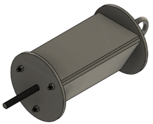
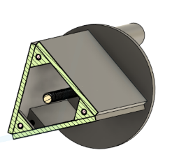

Results
Below I have included a few key final statistics of the completed and launched rocket as to give a quick summary and set the scale.
The Goddard and final year of the program, students are tasked with designing a rocket that can carry a 5lb payload to world-record breaking altitude of 50,000 feet with a given budget of 10,000 dollars.
Below I have included a few key final statistics of the completed and launched rocket as to give a quick summary and set the scale.
The first picture displays the complete rocket ready to fire on the rail. From left to right we can see the carbon fiber wrapped combustion chamber where the solid fuel (ABS) is housed, the aluminum oxidizer tank which hold the liquid oxidizer (Nitrous), and the fiberglass forebody (both the green bodytube and balck nose cone) where the instrumentation, avionics, recovery, and payload are housed. In the second or post flight picture on the top row the green body tube from the forebody and the aluminum oxidizer tank can be seen, and in the bottom row the carbon fiber wrapper combustion chamber. Unfortunately the nose cone was unable to be recovered due to the shock cord breaking allowing the parachute and nose cone to drift away. The damage seen in the post flight photo can also be attributed to the shock cord breaking, however, the damage was minimal given the rocket had to withstand roughly a 45,000 foot fall.


My roles this year, just as the last two projects, were the avionics lead and lead engineer of the project, however, given the size of the project my responsibilities as the Lead Engineer grew dramatically compared to previous years. Instead of placing a big focus on solely avionics I spread it over every component and designed parts pertaining to every sections of the rocket. In addition, I was also in charge of finding, communicating with, and updating sponsors, setting up info-sessions for CAD, CNC, and other softwares, understanding the CNC lathes and mills need to make our parts managing a 5-figure budget (10,000 dollar), and filling out the required paperwork for the team, school, System's Go, and making sure everyone on the team has filled out the personal documents allowing us to launch on White Sands Military Base. In the following sections I have detailed some of the major component which I designed.
Just like the Oberth rocket this project also required a math model, however as this year a requirement is to build our own hybrid engine there was a larger depth to this math model. I have included a link to view an earlier stage math model for the project below, the final model is having trouble opening which I will attach as soon as I figure out the issue. Below are some key variable parameters and assumptions that were made in the model (some might not be in the model linked below due to the issue mentioned above)
Design Parameters:
These parameters culminated in the dicision to have a triangular bay with each side having its own system (system meaning the choosen hardware and needed battery), buying a fiberglass tube to be used as the body, the mounting plates made of ABS sheets and connected with 3D printed supports, and a final length of about 10".
 The three systems included a Telemetrum, an altimeter capable of transmitting/storing a mutlitude of data and GPS coordinates, a Stratologger CF, another altimeter capable of storing similar data to the Telemtrum, and a GPS, capable of transmitting live alitude and coordinate values to a handheld device. The photos below show all the components used in the assembly of the bay (the right photo) and the state of the components after launch.


Early in the year I began learning how to CAD and CNC in Solidworks as our sponsor's (Da Vinci Maker Labs)
machines take the GCode directly from Solidworks software. My primary role here was the generate the CNC code
needed for every operation and set up/operate the CNC lathe and mill. Here I learned how to CAD with manufacturing
in mind, use solidworks to generate GCode, set coordinate axies, tool offsets, and how to correctly operate CNC machines
over a range of materials and speeds with a tolerance of 土.005".
Components Made with CNC: Aluminum Upper and Lower Ox Tank Heads, Graphite Nozzle, Steel Coupler Ring.


Photo Descriptions: The left photo shows completed outside face of the upper ox tank head inside the machine in a position ready for the boring operation to create a spherical head so better distribute the pressure inside the tank. The right photo shows the fully completed graphite nozzle with o-ring grooves and bell geometry visible.
As stated before a major component of this project was the research and construction of a hybrid engine designed completed by the team. Along with my models another area in which I helped was in the testing of different fuel types and design/making a test stand capable of measuring thrust using load cells.
Before making the full sized fuel grain we test a range of materials, including HTPB, parasol, and ABS. The video and picture below show a test conducted with ABS and the resulting regression made from a cylindrical port. ABS was also ultimately choosen as the material to use in the final rocket. ABS was choosen due reliably combustion with nitrous and its ability to be 3D printed allowing us to easily use a complex port geometry. The final fuel grain weighted roughly 22lbs, 31" long, and was printed in five sections each taking about 20 hours of print time.
While the testing fuel grains provides very valuable visual, fuel regression, and nitrous flow rate data the years of rockets before us have never measured thrust data. To solve this issue I contacted an expert in load cells at manufacturing company in my area to give advice and help me build a working model. The set up is seen in the photo to the right, where the top cylinder is where the fuel is housed with the flame cone leaving from the top, the box is used to hold the cylinder, and then there is the scale under everything which measures the thrust created from the fuel. The scale uses a load cell to measure the thrust by converting changes in resistance due to the deformation of the internal cicuit to a force in Newtons. This data is then sent through the wires to a screen not shown in the photo that displays the values during the test and saves them to a excel spreadsheet.
While the main and offical goal of the Goddard Rocketry Project is to launch a rocket with a self-made engine and payload to an alitude of 50,000 feet, completing them also results in another acomplishment, the world record for the highest altitude reached by highschool student lead researched and designed rocket. The preivous record was about 35,000 feet and stood for 15 years before my team and I came and reached a final alitude of 49,523 feet ASL. This record has since been confirmed by the military, circulated through news channels/other online videos, and referenced in offical Texas government legislative resolutions.